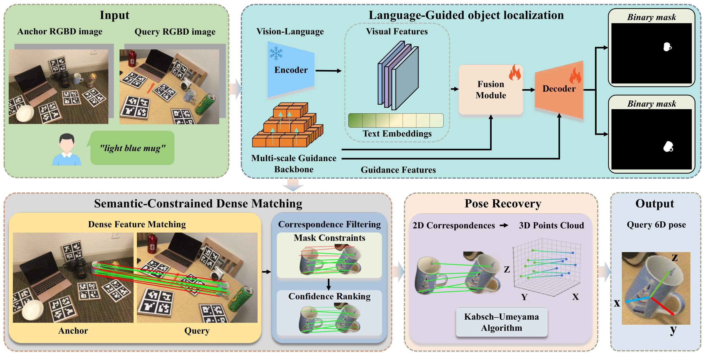
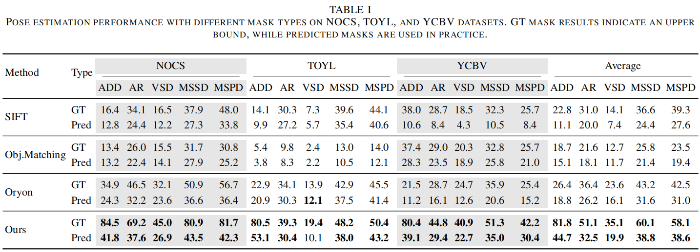
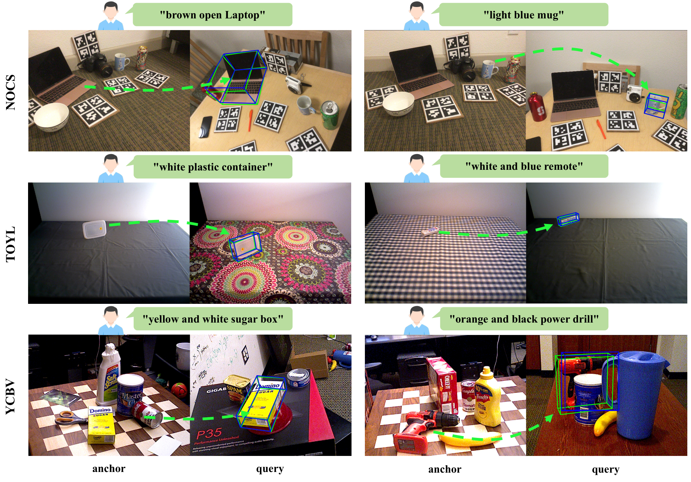
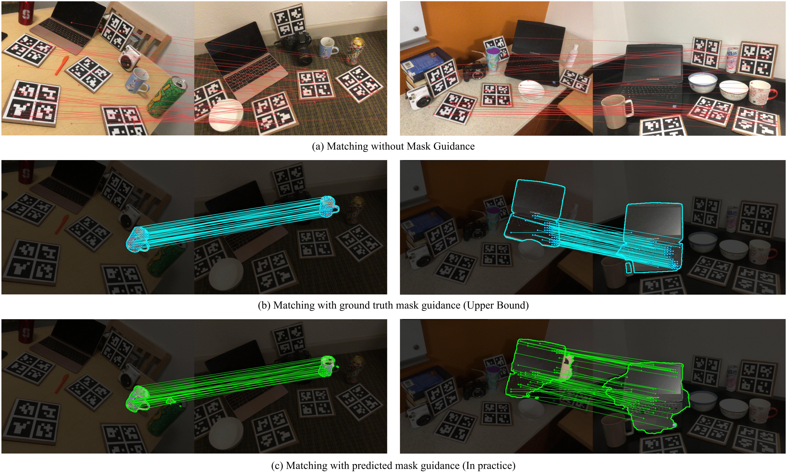
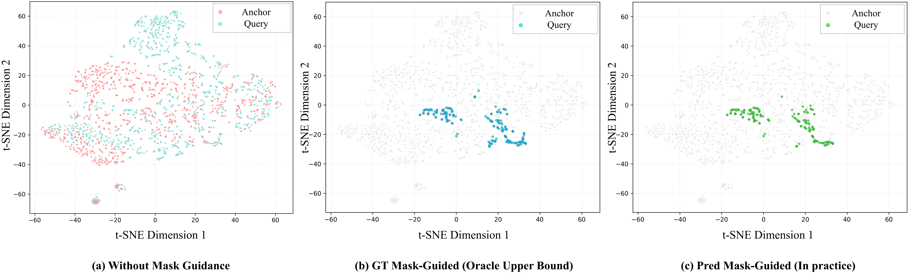
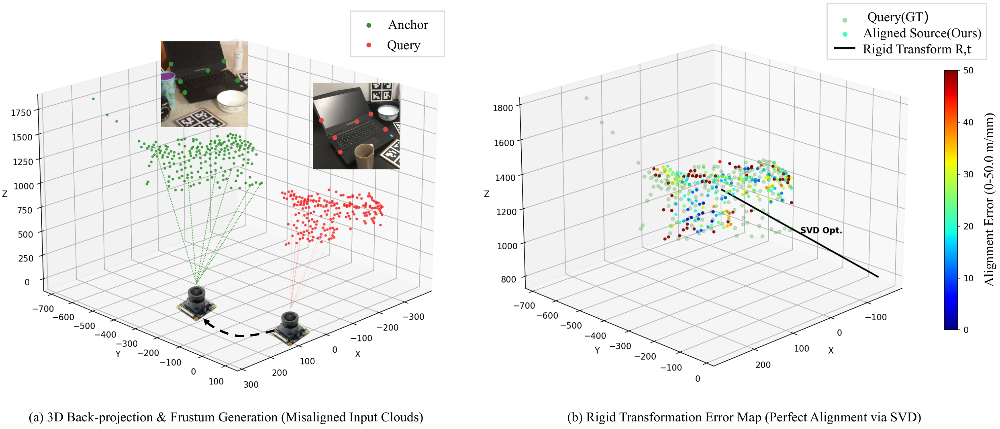

ABSTRACT: 6D object pose estimation from visual observations is a fundamental yet challenging problem, especially in open-world scenarios where objects are specified on demand and may not have object-specific assets such as CAD models, pose annotations, or pre-built templates. Existing approaches are often limited by closed-set assumptions, requiring object-specific training or pre-collected priors, which restrict scalability to unseen objects. In this paper, we propose a training-free framework for 6D pose estimation that bridges language-guided perception and geometric reasoning. Our key idea is to reformulate pose estimation as a correspondence-driven problem conditioned on language-guided object localization. To this end, we introduce a language-guided mask prediction network, which leverages vision-language priors to localize target objects from natural-language descriptions. Importantly, these predicted masks act as inference-time geometric priors, constraining dense correspondence estimation, suppressing background clutter, and reducing matching ambiguity. The resulting correspondences are lifted to 3D space and solved via closed-form rigid alignment, enabling efficient and robust pose recovery without CAD models or pose-level supervision. Extensive experiments on multiple real-world benchmarks demonstrate strong generalization across diverse objects and scenes, consistently outperforming representative correspondence-based and language-guided baselines under realistic settings.

Figure 1: Framework overview. Given an anchor RGB-D image, a query RGB-D image, and a text description of the target object, the method first predicts target object semantic segmentation masks Ma and Mq. After that, a Transformer-based network performs coarse-to-fine dense matching, followed by hierarchical filtering based on mask constraints and confidence ranking. Finally, the 2D correspondences are back-projected to 3D space using depth maps and camera intrinsics, and the relative 6D pose is computed via the Kabsch–Umeyama algorithm.
The method decouples semantics and geometry through an explicit intermediate representation (mask priors), which improves matching reliability under clutter, distractors, and viewpoint changes. The localization network (PromptMask) is trained offline with mask supervision only; at inference time, correspondence estimation and pose recovery are entirely training-free, relying on pre-trained models and geometric solvers.
We evaluate all methods under two mask settings: GT (ground-truth masks, upper bound) and Pred (predicted masks, realistic deployment). Metrics follow the BOP Benchmark: ADD(S)-0.1d and AR (average of VSD, MSSD, MSPD).

Table 1: Pose estimation performance with different mask types on NOCS, TOYL, and YCBV datasets. GT mask results indicate an upper bound, while predicted masks are used in practice. Bold = best under Pred setting.
Under the realistic predicted-mask setting, our method consistently achieves the best overall performance across all datasets. Averaged across all datasets, our method achieves ADD / AR / VSD / MSSD / MSPD of 44.7 / 32.5 / 19.9 / 38.8 / 38.6, compared to Oryon's 18.8 / 26.2 / 16.1 / 31.6 / 31.0. A noticeable gap between GT-mask and Pred-mask results indicates that mask quality remains a key bottleneck, while also revealing the performance headroom of the geometric pipeline when object localization is accurate.

Figure 2: Qualitative comparison of 6D pose estimation. For each example, the anchor image (left) and the query image (right) are shown. On the query image, the projected 3D bounding box under the ground-truth pose is rendered in green, while the bounding box under the predicted pose is rendered in red.

Figure 3: Three-way comparison of correspondence matching strategies. Without mask guidance (top), many spurious matches arise from background regions. Using oracle ground-truth masks (middle) effectively suppresses background noise. Our predicted mask–guided matching (bottom) achieves comparable filtering quality.

Figure 4: t-SNE visualization of mask-guided feature distributions from anchor–query image pairs. (a) No mask guidance: foreground and background features are highly entangled. (b) GT mask-guided: oracle masks form compact foreground clusters. (c) Predicted mask-guided (ours): learned masks produce foreground clusters comparable to the oracle case.

Figure 5: Visualization of 2D-3D point cloud registration and alignment. (a) Source point cloud PS (red) back-projected from 2D coordinates is initially misaligned with target PT (green). (b) After applying the predicted rotation R and translation t via SVD, the aligned source cloud shows dominantly low error (blue), demonstrating high pose accuracy.
If you have any further enquiries, question, or comments, please contact long.tian@swjtu.edu.cn